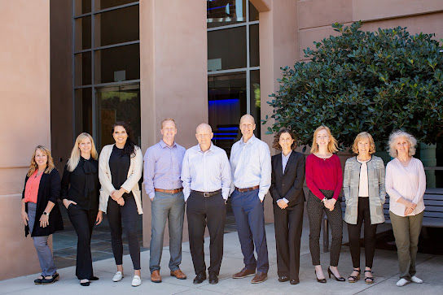

Pleasanton Inheritance Court Roadmap
A well-managed estate file benefits from an agreed communication process and a clear record of decisions. Before responding to requests from heirs or service providers, the person handling the matter can consult a qualified estate administration lawyer in pleasanton to distinguish routine correspondence from issues that require formal action. That estate administration lawyer in pleasanton may also help set realistic expectations about review times, document requests, and the information that should be shared with each recipient.
Financial review should proceed alongside communication. Reconciled ledgers, independent valuations, and a written record of expenses can make it easier to explain why a payment is approved or deferred. A qualified estate administration lawyer in pleasanton can help assess whether unusual property, business interests, or outstanding invoices need separate treatment. Involving the same estate administration lawyer in pleasanton when questions arise may promote consistent advice and reduce misunderstandings among recipients.
As the work approaches completion, the file should show what was received, what was paid, and why the remaining balance is allocated as proposed. A final review can uncover missing receipts, unresolved correspondence, or inconsistent figures before documents are submitted for approval. When a concern cannot be settled through clarification, an experienced estate administration lawyer in pleasanton can help assess a proportionate response and preserve a concise record of the decision.

Legal Strategy For Complicated Estates
Some estate matters involve more than distributing named assets; they may include privately held businesses, unusual investments, intellectual property, digital property, or obligations in several jurisdictions. A focused review with an estate administration lawyer in pleasanton can help classify those interests, identify missing information, and set priorities before valuations or deadlines create complications. Input from an estate administration lawyer in pleasanton may also clarify tax exposure, creditor concerns, ownership restrictions, and the need for specialized appraisals, giving the person responsible a sound basis for the next stage.
Assets that pass outside a will or trust deserve separate attention. Beneficiary designations, joint ownership, retirement plans, business succession terms, and online accounts can produce results that differ from the distribution of the remaining property. By working with an estate administration lawyer in pleasanton, the responsible party can compare the relevant instruments, investigate transfer limits, and identify inconsistencies before funds or property change hands. Guidance from an estate administration lawyer in pleasanton can further support a consistent approach to tax filings, creditor claims, and valuation disputes when information comes from multiple institutions.
When disagreements arise, a measured process can preserve value while narrowing the questions that actually require intervention. Neutral valuation, facilitated discussion, and targeted settlement proposals may resolve practical differences without unnecessary expense, while formal proceedings remain available for issues that cannot be settled. With help from an estate administration lawyer in pleasanton, the parties can organize the evidence, assess proposed distributions, and choose next steps that reflect the governing documents and applicable obligations. This approach promotes accountability without slowing the administration more than the circumstances require.
California Heirship Questions Answered
When a California resident dies without a valid will, intestate succession rules determine which relatives may inherit and how the estate is divided. A consultation with an estate administration lawyer in pleasanton can clarify whether those rules apply or whether a will, trust, or beneficiary designation controls a particular asset. The result may depend on marriage, a registered domestic partnership, children, adoption, or whether a parent survived the decedent, so assumptions about family rank can be misleading. An estate administration lawyer in pleasanton can help evaluate those relationships and explain the likely order of succession before any distribution is proposed.
Family expectations do not by themselves establish inheritance rights. Community property, separate property, a deceased child, adoption, and whether a domestic partnership was registered can affect the outcome under California law. The guidance of an estate administration lawyer in pleasanton may be useful when relatives disagree about whether someone qualifies as an heir, particularly if the family tree includes a late-discovered relationship. An estate administration lawyer in pleasanton can also explain how declarations, public records, and other reliable proof may support or challenge that claim during the estate process.
Before property is distributed, the estate's debts, taxes, and property passing directly to a named beneficiary should be reviewed so that the proper share is calculated. A clear family-tree summary and a written explanation of proposed shares can reduce confusion without treating an assumption as a final legal conclusion. Because a mistaken distribution can be difficult to reverse, consulting with an estate administration lawyer in pleasanton before signing waivers or transferring property can help protect the estate and the people entitled to it.
HALL LAW GROUP
HALL LAW GROUP
Address: 4750 Willow Road, Suite 225, Pleasanton, CA 94588
(925) 460-0711